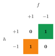
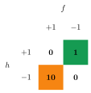
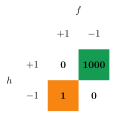

3 PAC Learning
As we will see below, through the assumptions made above we are not certain of finding the correct predictor that completely nullifies the true error, but we will have the possibility of getting as close as possible. In particular, we will say that the learning is probably approximately correct and in this sense we will speak of PAC learning.
In detail, we mean the following:
- Approximately: we cannot be sure of finding the predictor \(h^*(x)\), but we can certainly get close to it. Quantitatively, we define a threshold through the accuracy parameter \(\epsilon\) and we will say that we are satisfied when \(L_{\mathcal{D},f}\left(h_S\right)\leqslant\epsilon\).
- Probably: even if the number of extracted points is high and we are sure that they are i.i.d., it can still happen that the set \(\mathcal{S}\) is not representative to the point of not allowing us to find the hypothesis that allows us to limit the true error. Usually, a confidence parameter \(\delta\) is defined, which represents the probability that \(\mathcal{S}\) is not a representative set; consequently, \(1-\delta\) will represent the probability that the ERM on the hypothesis class \(\mathcal{H}\) produces a model with an acceptable error rate.
On these ideas rests the following fundamental theorem:
Let \(\mathcal{H}\) be a finite hypothesis class and let \(\delta\in(0,1)\), \(\epsilon\in(0,1)\) and \(m\in\mathbb{N}\) such that
\[ m\geqslant\frac{\log\left(\frac{\abs{\mathcal{H}}}{\delta}\right)}{\epsilon} \]
Then, for any prediction rule \(\boldsymbol{f}\) and for any distribution \(\boldsymbol{\mathcal{D}}\) for which the realizability assumption is valid, with a probability equal to or greater than \(1-\delta\) it holds that for every hypothesis \(h_S\), to which the ERM is applied with respect to a learning set \(\mathcal{S}\) with \(m\) i.i.d. points from \(\mathcal{D}\), it holds:
\[ \boxed{L_{\mathcal{D},f}\left(h_S\right)\leqslant\epsilon} \]
Usually in practice one starts from \(m\), which is known, and chooses to increase or decrease the parameters \(\epsilon\) and \(\delta\) to find the best algorithm that fits the data: since \(m\) is inversely proportional to both parameters, as they decrease it is necessary for the number of points in \(\mathcal{S}\) to be larger for the hypotheses of the theorem to be respected, and this is quite obvious if we think about the fact that increasing \(m\) means increasing the representativeness of \(\mathcal{S}\).
The crucial point of the whole theorem is that we know of the existence of “unlucky” learning sets that lead to fallacious functions, since for them the empirical risk (low) is very different from the true error (high); we therefore place an upper limit on the probability of sampling these “deceptive” sets given by the parameter \(\delta\) and we fix a tolerance threshold for the true error through \(\epsilon\). In all this, the proof of the theorem (It is not required for this course and will therefore not be reported.) clarifies that it is the finiteness of the class \(\mathcal{H}\) that guarantees that there is no overfitting with a probability of \(1-\delta\).
3.1 PAC learnability
The concept of PAC learning is also useful for defining a property related to it, which is that of PAC learnability.
First of all, we generally indicate with \(m_{\mathcal{H}}(\epsilon,\delta)\) a natural number associated with the class \(\mathcal{H}\) called sample complexity; being dependent on the parameters \(\epsilon\) and \(\delta\), which we know go from \(0\) to \(1\), then we can consider \(m_{\mathcal{H}}\) as a function of the type \((0,1)^2\to\mathbb{N}\).
At this point we can make the property explicit as follows:
A hypothesis class \(\mathcal{H}\) is PAC learnable if there exists a function and a learning algorithm with the following property:
- for every \(\epsilon,\delta\in(0,1)\)
- for every distribution \(\mathcal{D}\) on \(\mathcal{X}\)
- for every prediction rule \(f:x\to\{0,1\}\)
- if the realizability assumption is valid with respect to \(\mathcal{H}\), \(\mathcal{D}\) and \(f\)
then when the learning algorithm is run on \(m\geqslant m_{\mathcal{H}}(\epsilon,\delta)\) i.i.d. points according to \(\mathcal{D}\) and labeled according to \(f\) it returns a hypothesis \(h\) such that
\[ L_{\mathcal{D},f}(h)\leqslant\epsilon \]
with a probability of at least \(1-\delta\).
The other side of the coin of this definition is that there are certainly hypothesis classes that are not PAC learnable: for such hypotheses, therefore, there will always be the possibility of having an overfitting of the data, regardless of how large the learning set is chosen.
PAC learnability therefore guarantees the possibility of approaching with a certain confidence an algorithm with a true error close to zero, provided that the size of \(\mathcal{S}\) is increased.
From the theorem on PAC learning and the definition of PAC learnability, an obvious corollary follows:
Every finite hypothesis class is PAC learnable with sample complexity
\[ m_{\mathcal{H}}(\epsilon,\delta)\leqslant\frac{\log\left(\frac{\abs{\mathcal{H}}}{\delta}\right)}{\epsilon} \tag{3.1}\]
It should be borne in mind that the one just written is a sufficient but not necessary condition, in the sense that there are hypothesis classes that do not respect the condition (eq-pac-learning-corollario) but which are still PAC learnable.
3.1.1 Agnostic PAC learnability
When we relax the realizability assumption and allow noise in the labels, we need a more general notion of PAC learnability.
A hypothesis class \(\mathcal{H}\) is agnostic-PAC learnable if there exists a learner algorithm \(A\) and a sample complexity function \(m_{\mathcal{H}}(\epsilon,\delta)\) such that for every distribution \(\mathcal{D}\) over \(\mathcal{X}\times\mathcal{Y}\), with probability at least \(1-\delta\) over \(\mathcal{S}\sim\mathcal{D}^m\), the learned hypothesis \(h=A(\mathcal{S})\) satisfies:
\[ L_{\mathcal{D}}(h) \leq \min_{h'\in\mathcal{H}} L_{\mathcal{D}}(h') + \epsilon \]
The key difference from the realizable case is that we no longer assume a perfect hypothesis exists in \(\mathcal{H}\). Instead, we require that our learned hypothesis achieves error no worse than the best hypothesis in our class, plus a tolerance term \(\epsilon\).
For a finite hypothesis class \(\mathcal{H}\), the sample complexity for agnostic PAC learnability is
\[ m_{\mathcal{H}}(\epsilon,\delta) \geq \frac{\log(2|\mathcal{H}|/\delta)}{2\epsilon^2} \]
3.2 A more general learning model
All the conditions that we have imposed so far are very stringent and make the applicability of the methods described above in the real world difficult.
A first constraint that can be abandoned is that of the narrowness of the hypothesis class \(\mathcal{H}\): after all, the corollary on PAC learning tells us that if the class is finite then, that condition being valid, it is certainly PAC learnable; but, in addition to the existence of the possibility of finite classes for which (eq-pac-learning-corollario) is not respected but which are still PAC learnable, there is also the possibility of infinite classes that are equally PAC learnable.
The two most important limitations assumed to be valid so far, however, are the following:
Realizability assumption
We have assumed that the correct prediction rule is in the considered hypothesis class, that is:
\[ \exists h^*\in\mathcal{H}:\mathbb{P}_{x\sim\mathcal{D}}\left[h^*(x)=f(x)\right]=1 \]
In practice, this condition is rarely met. Moreover, it would be more realistic to assume that the prediction rule \(f\) does not uniquely determine the labels, because we must consider the presence of sources of noise that can alter the categorization of elements of the domain that are the same.
For these reasons, the prediction rule \(f\) is usually replaced with a joint distribution \(\mathcal{D}\) with respect to the set \(\mathcal{X}\times\mathcal{Y}\) composed essentially of two parts:
- \(\mathcal{D}_x\): the marginal distribution that replaces the previous distribution \(\mathcal{D}\)
- \({\mathcal{D}}((x,y)|x)\): the conditional distribution that associates to each point \(x\) of the domain the probability that it is labeled in one way or another
To give a practical example: to train an algorithm to identify photos of men or women, we could include among the parameters the fact that the subject wears a skirt or not; according to Western norms, skirts are generally worn by women, but there is still a small probability that it is instead worn by a man (think of the Scottish kilt).
Binary classification
So far we have limited ourselves to a set \(\mathcal{Y}\) of the type \(\{0,1\}\), but in many problems it is useful to classify through a larger number of labels. In the case of regression, the dimension of \(\mathcal{Y}\) becomes infinite, as it is necessary to identify a line that fits the points in a space and therefore depends on real parameters.
3.3 Generalization of errors
Let’s proceed by first giving up the realizability assumption, and only later will we also assume a classification that is not necessarily binary.
By extending the concept of a prediction rule, from a function that maps points from \(\mathcal{X}\) to \(\mathcal{Y}\) to a joint distribution on \(\mathcal{X}\times\mathcal{Y}\), it is necessary to redefine the true error.
First of all, we will not have a point \(x\) extracted from \(\mathcal{D}\) but a pair \((x,y)\) extracted from the joint distribution \(\mathcal{D}\), just as we will not have the image \(f(x)\) but we will have to make explicit reference to the element \(y\) belonging to the set \(\mathcal{Y}\). We will therefore rewrite equation (eq-modelli-di-machine-learning-true-error-1) as:
\[ \boxed{L_{\mathcal{D}}(h)={\mathcal{D}}((x,y):h(x)\neq y)=\mathbb{P}_{(x,y)\sim\mathcal{D}}[h(x)\neq y]} \]
According to what we have said, it will never be possible to have a true error equal to zero, because the prediction rule is not deterministic but probabilistic, so there is a sort of “intrinsic error” that cannot be eliminated even if the “correct” predictor were chosen.
The empirical risk, on the other hand, does not change in its definition (equation eq-modelli-di-machine-learning-empirical-risk), because it refers to the training set \(\mathcal{S}\) which has remained unchanged; let’s just remember that it is the probability that, taking a pair \(\left(x_i,y_i\right)\) randomly (uniform distribution), we have \(h\left(x_i\right)\neq y_i\).
3.3.1 Bayes Optimal Predictor
Our goal is always to find a function \(h:\mathcal{X}\to\mathcal{Y}\) that minimizes \(L_{\mathcal{D}}(h)\).
According to Bayesian statistics, given the distribution \(\mathcal{D}\) on the set \(\mathcal{X}\times\mathcal{Y}\), the best predictor is the Bayes Optimal Predictor:
\[ f_{\mathcal{D}}(x)= \begin{cases} 1 \ \ \ \text{if } \mathcal{P}[y=1|x]\geqslant\frac{1}{2}\\ 0 \ \ \ \text{otherwise} \end{cases} \]
Its meaning is quite intuitive: given \(x\), if the probability that \(y=1\) is greater than \(\frac{1}{2}\), then it is statistically more likely to be correct in stating that \(y=1\) than the contrary. Rigorously, it is possible to show that \(L_{\mathcal{D}}\left(f_{\mathcal{D}}\right)\leqslant L_{\mathcal{D}}(g)\) for any \(g:\mathcal{X}\to\{0,1\}\).
This algorithm, however, is not applicable in machine learning, because it requires knowledge of the distribution \(\mathcal{D}\) which, on the contrary, is not known.
3.3.2 Agnostic PAC learnability
Even if we give up the idea of looking for the optimal predictor with a loss function equal to zero, we still want to arrive at a function that is quite close to it, and therefore reduce the true error knowing that we can only get close to zero. We can then extend the concept of PAC learnability to that of agnostic PAC learnability as follows:
A hypothesis class \(\mathcal{H}\) is agnostic PAC learnable if there exists a function \(m_{\mathcal{H}}:(0,1)^2\to\mathbb{N}\) and a learning algorithm with the following property:
- for every \(\epsilon,\delta\in(0,1)\)
- for every distribution \(\mathcal{D}\) on \(\mathcal{X}\times\mathcal{Y}\)
then when the learning algorithm is run on \(m\geqslant m_{\mathcal{H}}(\epsilon,\delta)\) i.i.d. points according to \(\mathcal{D}\) it returns a hypothesis \(h\) such that
\[ L_{\mathcal{D}}(h)\leqslant \min_{h'\in\mathcal{H}}L_{\mathcal{D}}\left(h'\right)+\epsilon \]
with a probability of at least \(1-\delta\).
In this way we try to get closer to the minimum error value, which is given by a predictor \(h'\) known only if the distribution \(\mathcal{D}\) is also known.
The most relevant fact is that the realizability assumption is not required for \(\mathcal{H}\), and if it were satisfied then the smallest true error would be zero and we would fall back into the case of classical PAC learnability.
3.4 New types of classification
The second and last assumption that remains to be dropped is that of binary classification; let’s see two other types of classification:
Multiclass classification
The natural extension with respect to the binary one is the multiclass, in which the dimension of \(\mathcal{Y}=\{0,1,\dots,K-1\}\) is \(K>2\). In this case we will not limit ourselves to the classification of images of dogs and cats, but we will also look at birds, fish and so on.
The true error can be defined in the same way, that is, equal to \(0\) if the prediction is correct and \(1\) if it is wrong. The novelty is that we can “play” with the loss function by establishing that there are relative errors that are “less serious” than others: returning to the example mentioned above, we could state that mistaking a dog for a cat is not as wrong as mistaking a dog for a fish.
Regression
Here we further extremize the extension by finding \(\mathcal{Y}=\mathbb{R}\); the dimension of the set of labels is therefore not only infinite but also non-numerable, and for this reason we will no longer indicate \(\mathcal{Y}\) with set of labels but with target set.
In this case it will be inevitable to change the definition of the loss function, because from probability theory we know that, given a probability density function, the probability of being exactly at any point on the real line is zero. We will then see an extension of the definition of the loss function below.
3.4.1 Generalized loss function
Let’s consider the hypothesis class \(\mathcal{H}\), whose elements are the predictors \(h\), and the domain \(\mathcal{Z}=\mathcal{X}\times\mathcal{Y}\) whose elements are the pairs \((x,y)\).
A loss function in general is defined as a function of the type
\[ l:\mathcal{H}\times\mathcal{Z}\to\mathbb{R}_+ \]
The error will therefore be any positive real number determined from a function of \(h\) and \(z\).
From the function just written, a risk function is defined from the expected value of the loss function with \(z\) extracted from the distribution \(\mathcal{D}\):
\[ \boxed{L_{\mathcal{D}}(h)=\mathbb{E}_{z\sim\mathcal{D}}[l(h,z)]} \tag{3.2}\]
Similarly, we can redefine the empirical risk as the expected value of the loss given a learning set \(\mathcal{S}=\left(z_1,\dots,z_m\right)\):
\[ \boxed{L_{\mathcal{S}}(h)=\frac{1}{m}\sum_{i=1}^ml\left(h,z_i\right)} \tag{3.3}\]
Let’s see below the simplest loss functions: (The functions indicated with the term objective* are such because in the literature loss functions are translated as objective functions.)*
0-1 objective: used in the case of binary classification and often also of multiclass classification
\[ l_{0-1}(h,(x,y))= \begin{cases} 0 \ \ \ \text{if } h(x)=y\\ 1 \ \ \ \text{if } h(x)\neq y \end{cases} \]
Quadratic objective: used in the case of regression, it penalizes a few large errors
\[ l_{sq}(h,(x,y))=(h(x)-y)^2 \tag{3.4}\]
Mean absolute error: used in the case of regression, it penalizes many small errors
\[ l_{abs}(h,(x,y))=\abs{h(x)-y} \]
3.4.2 Relevance of errors
Sometimes the weight associated with errors depends on the type of application in which an algorithm is used.
Let’s look at a practical example: a fingerprint scanner that has to understand if a fingerprint belongs to its internal register; if this occurs then the user is authorized to access, while if this is not the case the user is not authorized to access and is rejected.
In this problem the classification is binary: in particular we indicate with \(-1\) the rejection and with \(1\) the approval. There will be two types of error: a false approval, when an unauthorized malicious person still manages to access the service, and a false rejection, when an authorized user is rejected.
In general we can build a matrix (It is not called in any particular way by either the professor or the book, but searching on the internet it could be what is called a confusion matrix.) associated with the errors as follows:

where with \(h\) we indicate the predictor learned by the machine learning algorithm.
According to what is written, the two types of errors have the same weight and contribute in the same way, but it is possible to vary the two weights in order to make one error more “serious” than the other; let’s see two examples.
The discount at the supermarket
We are in 2032: the World Cup is being played in Saudi Arabia, Ferrari has already abandoned the current car to concentrate on the one for 2033 and China has now completely conquered Italy by proposing its supermarkets with fingerprint recognition for possible discounts to those who, in one way or another, favor the Asian regime.
In a case of error, a customer whose fingerprint is registered in the database is rejected, thus not being able to take advantage of the discount to which he is entitled. This, on the whole, is considered more serious than the other type of error, that is, a malicious person who manages to take advantage of the discount through a fingerprint despite not being registered, because in the latter case the store loses a small profit, while in the other it loses a customer who will no longer buy from that supermarket (and will not favor the colonization work of the dragon).
For this reason, the matrix is fixed as follows:

The algorithm is therefore trained to recognize false rejections as if they were each worth ten false approvals, so they will tend to be more avoided by a correctly optimized prediction rule.
Secret room of the CIA
It is clear that in the case of security systems, contrary to the previous case, a false approval would be considered extremely more serious than a false rejection: an authorized employee, if rejected, would simply understand the high degree of security for a place of that type, while it is necessary to avoid the possibility that some unknown person has access to such a reserved area.
The matrix will therefore be something like:

3.4.3 Generalized agnostic PAC learnability
Having now also freed ourselves from binary classification, we can finally define an even more general PAC learnability that allows us to adapt to as many problems as we face in the real world.
A hypothesis class \(\mathcal{H}\) is agnostic PAC learnable with respect to a set \(\mathcal{Z}\) and a loss function \(l:\mathcal{H}\times\mathcal{Z}\to\mathbb{R}_+\) if there exists a function \(m_{\mathcal{H}}:(0,1)^2\to\mathbb{N}\) and a learning algorithm with the following property:
- for every \(\epsilon,\delta\in(0,1)\)
- for every distribution \(\mathcal{D}\) on \(\mathcal{Z}\)
then when the learning algorithm is run on \(m\geqslant m_{\mathcal{H}}(\epsilon,\delta)\) i.i.d. points according to \(\mathcal{D}\) it returns a hypothesis \(h\) such that
\[ L_{\mathcal{D}}(h)\leqslant \min_{h'\in\mathcal{H}}L_{\mathcal{D}}\left(h'\right)+\epsilon \]
with a probability of at least \(1-\delta\) and with \(L_{\mathcal{D}}(h)=\mathbb{E}_{z\sim\mathcal{D}}[l(h,z)]\).